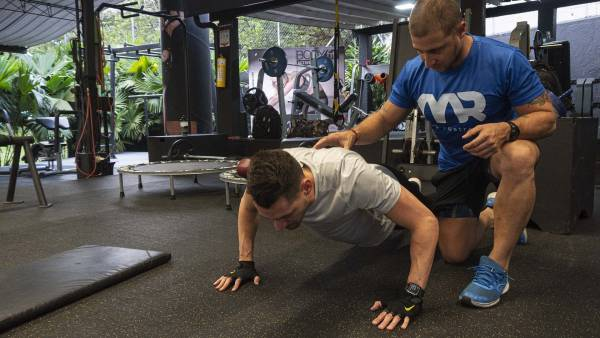

Nos ubicamos en:
Blvrd México 922, Latinoamericano
27277 Torreón, Coah.
Horarios
Lunes - Viernes: 6am - 10pm
Sábado - Domingo: 8am - 8pm
Unete a la comunidad
Nuestra Misión
En Gymbros, nuestra misión es inspirar y empoderar a nuestra comunidad para que adopte un estilo de vida más saludable y activo. Nos comprometemos a proporcionar un entorno motivador y de apoyo, donde cada miembro pueda superar sus límites y descubrir su verdadero potencial.
Fomentamos un sentido de comunidad y camaradería, promoviendo el bienestar integral y participando en iniciativas locales. En Gymbros, queremos que nuestros miembros se sientan bien, empoderados y llenos de energía para afrontar cada día con entusiasmo y confianza.
Nuestra Visión
En Gymbros, aspiramos a ser líderes en la promoción de un estilo de vida saludable y activo en nuestra comunidad. Queremos ofrecer servicios de fitness y bienestar de la más alta calidad, innovando continuamente y adaptándonos a las necesidades de nuestros miembros.
Visualizamos una comunidad unida y solidaria, donde cada persona se sienta valorada y motivada. Nuestro objetivo es impactar positivamente la vida de nuestros miembros y ser un ejemplo de sostenibilidad y responsabilidad ambiental.
Buscamos crecer y expandir nuestra filosofía, llevando los valores de Gymbros a más personas y comunidades, para crear un mundo más saludable y activo.
¿Porqué elegirnos?
- Instalaciones de Primera Clase: Equipos de última tecnología y áreas especializadas para el entrenamiento de fuerza y cardiovascular.
- Entrenadores Expertos: Certificados y experimentados, ofrecen planes personalizados y orientación profesional.
- Flexibilidad y Comodidad: Horarios flexibles y opciones de membresía versátiles.
- Compromiso con la Salud y Seguridad: Protocolos estrictos de limpieza y medidas de seguridad.
- Ambiente Motivador: Comunidad positiva que apoya e inspira a alcanzar las metas.
Galeria